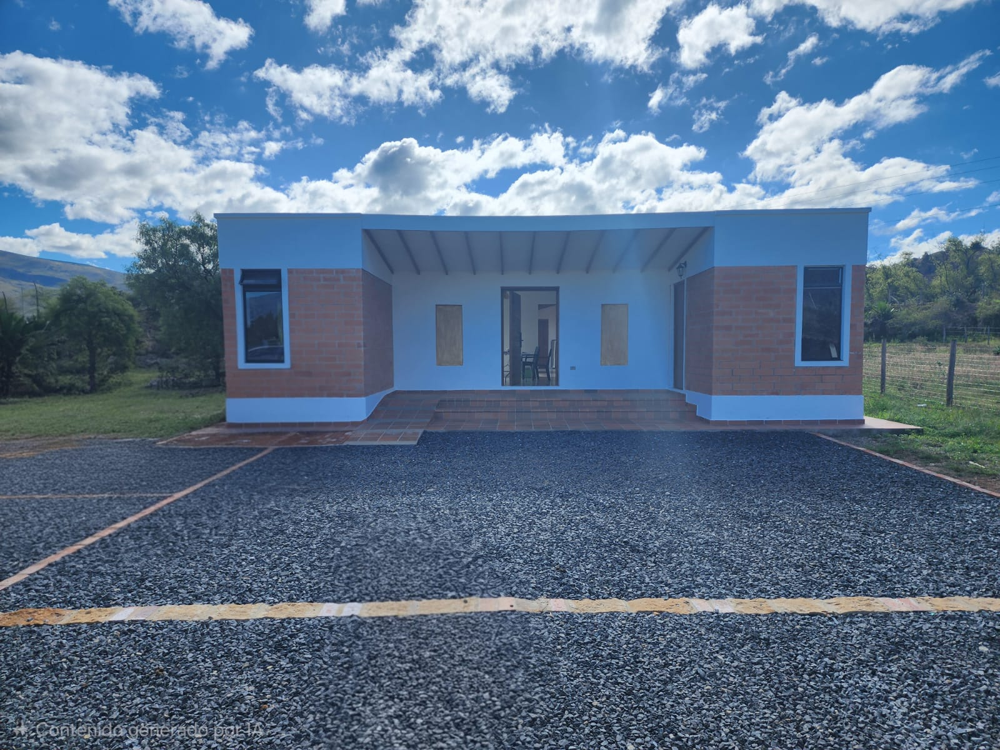
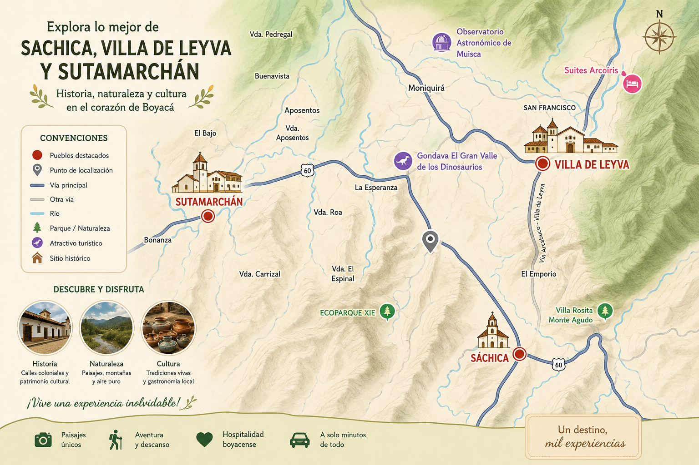

Explore los principales destinos turísticos, atractivos y rutas de acceso entre Sáchica, Villa de Leyva y Sutamarchán.

El Villa Meliath es el destino preferido para parejas, familias y turistas que buscan descanso, paz y relajación en la mágica Boyacá.
Conozca las instalaciones y disfrute de un ambiente tranquilo rodeado de naturaleza.